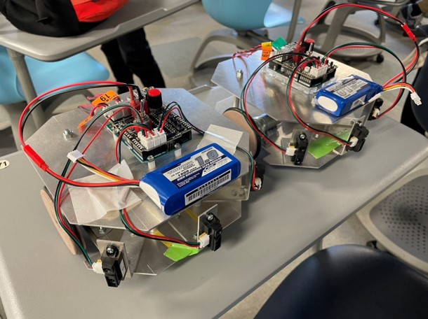

趣味：競技プログラミングへの参加・paizaでのコードテスト(Sランク)
興味分野：画像解析・機械学習
使用可能言語・環境：C/C++・Python3・HTML+CSS・Processing(Python)・Arduino IDE(C++)
概要
使用言語：C++
プログラム：WindowsとLinuxのテトリスのコード
まず、Windows環境でコマンドプロンプトで動作するテトリスを制作し、それをもとにLinuxのターミナルで動作するように変更した。
将来的には、本作のアルゴリズムをもとにUnityでの制作も考えている。
行う処理の説明
1,ランダムにミノと呼ばれるブロックをランダムに出力し、一定以上の時間が経過すると降下する。
2,キーボードでのw,a,s,dでミノを移動し、その他のキーで回転させる。
3,移動する際は、出力を消去し、新しく出力するような更新作業を行う。
4,ミノが一番上まで上がった際はGAME OVERと出力する。
プログラムの説明
上記を処理するプログラムについて説明する。
1,ミノは配列を用いて描画し、ランダムに出力する。
2,キーボード入力は、_getch()を用いて判別をする。(Linuxの場合getch())
3,移動する際の出力の消去は、system()を用いて出力をクリアするコマンドの「cls」を実行し、移動後を出力する。(Linuxの場合「clear」)
4,ミノは配列で処理しているので、一番上までミノが到達しているかどうかを「1」の際に確認して、到達していたらGAME OVERと消した行数(Score)を出力してreturn 0を返す。
概要
開発環境：Arduino IDE(C++)
プログラム：ロボットカーとセンサのコード
Arduinoマイコンを用いて、制作したプログラムをモーターに組み込んで動作させる。
下の画像のようなロボットカー2機をコの字型コースを走らせタイムを計る。

プログラムを組む前に事前に使用するセンサが正しく動作するかの測定実験を行い、正しく動作する数値を記録する必要がある。
その際に使用するプログラムをgithub上のsensor.inoに示す。
行う処理の説明
センサは斜め前(左右)と前方向に配置してある。
斜め前方向のセンサで左右の距離を保ち、前のセンサで一定距離まで到達すると停止→回転→直進するプログラムを作成する。
直進するスピードを速くしすぎると、センサの反応が間に合わず、壁に衝突してしまうことがあるので注意が必要だった。
プログラムの説明
1,初期設定を行い、スイッチが押されるまで角速度センサを更新してLED制御をする。
2,ループ関数内では最初にモーターの速度を設定するための変数を定義し、赤外線距離センサの値を読み取る。
3,角速度センサを更新し、左もしくは右の赤外線距離センサの値を読み込み基準角速度を計算する。
4,計算した基準角速度と実際の角速度の差を用いてモーターの速度を調整し、モーターを動かす。
結果の動画
記録：16.79秒
概要
開発環境：Linux・ROS(Python3)
プログラム：Turtlebot2を動作させるコード
Turtlebot2というロボット掃除機に土台とカメラを取り付けたロボットを使用する。
PCを土台の上に置き、コードを繋げてプログラム通りに操作をさせる。
デプスカメラを用いて障害物を避ける。
充電器からの赤外線を受信し、充電器とドッキングする。
下準備
ROSを利用するため、下記の作業をこれらを行う必要がある。
1,ROSのインストールする。
2,catkin_makeでのビルド
3,ROSに関連する環境変数にsetup.bashを用いてワークスペースのパスを追加
4,catkin_create_pkgでのパッケージの作成
行う処理の説明
デプスカメラを用いて障害物との距離を測定し、一定の距離まで接近したら、停止→回転→直進をする。
今回は充電器の場所とそれまでの壁の数が分かっていたので、if()を使って指定回数曲がったら充電器とドッキングするプログラムを呼び出す。
ドッキングの際は、赤外線を探知できるようにある程度後退する
プログラムの説明
1,ROSノードを初期化し、速度指令を'/cmd_vel_mux/input/teleop'トピックに送信するためのパブリッシャーを設定する。
2,'camera/depth/image_raw'トピックから深度画像を取得し、特定領域の平均深度を計算する。
3,平均深度がしきい値以上の場合、ロボットを直進させる。
4,平均深度がしきい値未満の場合、ロボットを回転させて障害物を回避し、指定回数回転後にドッキングプログラムを起動する。
5,Twistメッセージを使用して、ロボットの直進と回転の速度指令を設定し、指定回数だけパブリッシュする。
6,ROSノードを初期化し、メインの実行ループでロボットの動作を開始する。
結果の動画
Email: er22076-0633@sti.chubu.ac.jp